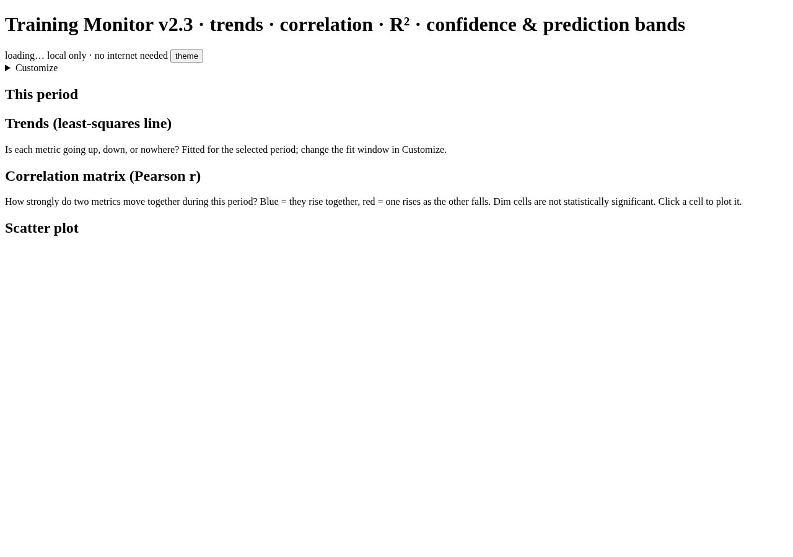

Watch a neural network learn.
Then find out what it really learned.
A small, offline dashboard for long training runs, plus an interactive playground and an honest write-up: what worked, what only looked like it worked, and what we got wrong.

The demo runs on invented numbers so you can poke every button. You can also install this page as an app (use your browser's "Install" or "Add to Home Screen"); it then works offline.
The dashboard
Charts, trend lines, correlations, R² and confidence bands for a training run, in one page that needs no internet. Pick a window, customise it, click a cell to plot a pair.
The playground
Three toys: what a correlation looks like, what the two kinds of bands mean, and why choosing which aims to test matters when testing is slow.
In plain English
No software background needed: a 60-second version, a glossary, a guided tour of the page and a pop-culture decoder.
What we learned
Lessons about long runs on one laptop, evaluation discipline, and the model itself, including the corrections.
The mathematics
The proof project's claim ledger and audit (with its erratum), and the statistics behind every number, each with the calculation shown.
The story & the code
A build log of the dead ends, an architecture tour, 50+ tests, and a demo-data generator so you can run it yourself.